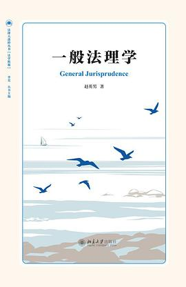
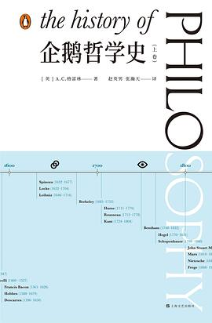
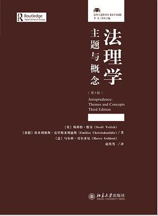
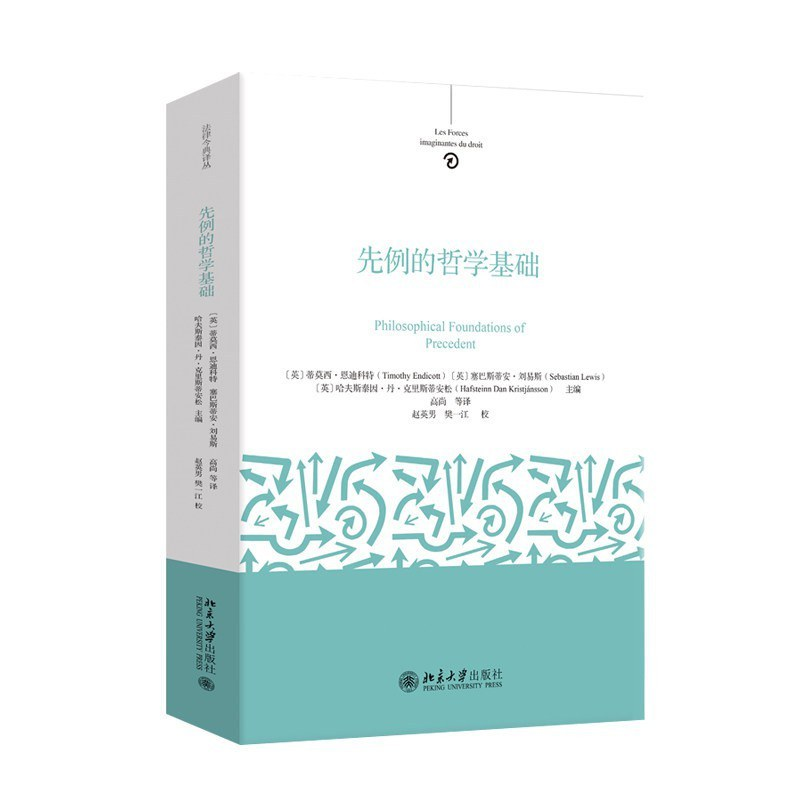

一般法理学
菜单
著作
书评
教学
动态
札记
标签
关于
搜索
主题
著作

著
一般法理学
2026
译
自然法与实践理性
2025
译
施特劳斯论历史的终结：黑格尔《历史哲学》讲疏
2025
译
法律实用主义研究
2025
译
法理论的社会学进路
2025
译
自然化法学：美国法律现实主义和法哲学中的自然主义文集
2024
译
掉队的男人：当代男性的现实困境
2024
译
语境中的法学家：威廉·特文宁学术回忆录
2024
译
法律多元主义阐释：历史、理论与影响
2023

译
企鹅哲学史（全两册）
2023

译
法理学：主题与概念（第三版）
2023

校
先例的哲学基础
2026
评论
按 Esc 关闭
Cmd/Ctrl + K
关闭


评论